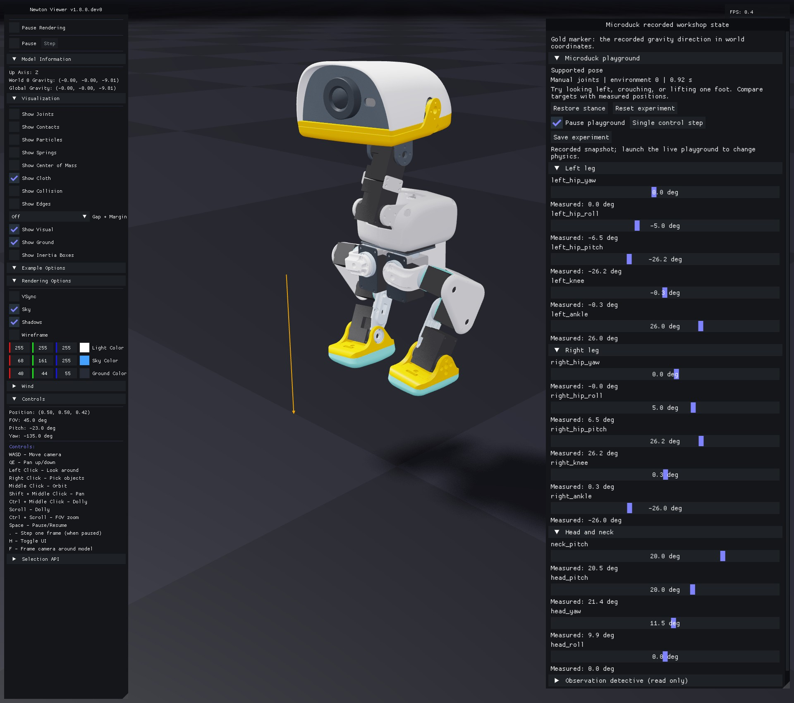
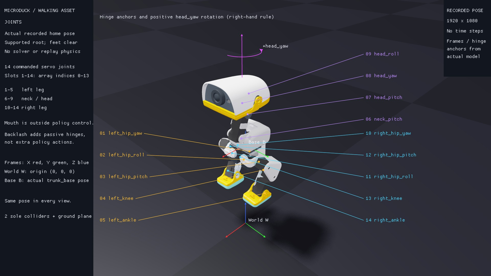
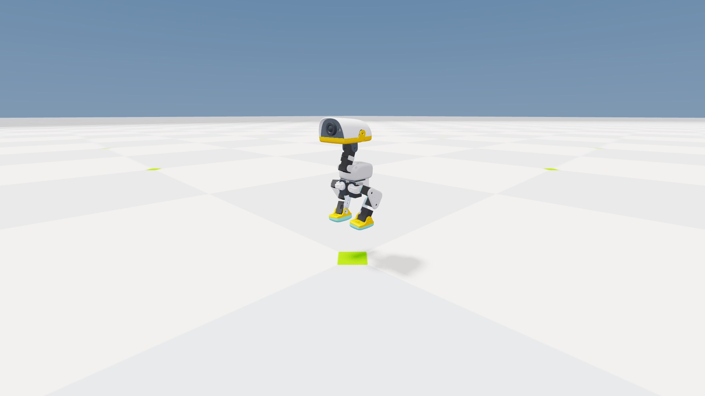
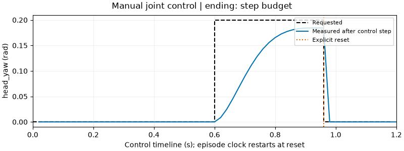

3. Play with a puppet duck¶
Challenge: make Microduck look left, crouch, or lift one foot.
uv run --project environments/locomotion python scripts/locomotion/playground.py
See the joint controls

This reference image renders an actual recorded state at 0.92 s using the same widgets as the live workshop. The root is fixed for this supported experiment; the feet need not touch the floor. The gold marker shows the recorded gravity direction. Run the command above to change targets and observe new physics.
Open Microduck playground in the Newton sidebar. The head/neck group starts open; expand either leg to see its joints. Sliders display degrees; the simulation receives radians. Each joint has a target and a measured angle.
The default Supported pose fixes the root above the floor so you can inspect motion without balancing. It is an inspection configuration, not a trained locomotion task. The feet hanging clear of the ground are intentional.
Move head_yaw, then a knee. Predict the direction first. The slider sends a target through the real BAM actuator model; it does not teleport the joint. The measured angle may lag or settle away from the target.
Try this three-move challenge:
- Move
head_yawto about 11°. Wait for the measured angle to settle. - Pause, request a different angle, and press Single control step. Does one 20 ms interval reach the target?
- Press Restore stance, then Reset experiment. The first changes requested targets; the second also resets physical state and controller histories.
Pause playground freezes control stepping while preserving viewer interaction. Save experiment writes named targets and timing to outputs/playground/experiment.json.
Find the hinge before moving it¶
Pick left_knee or head_yaw on the joint plate below. Predict its positive direction, then make a small slider change. The plate maps the actual hinges to the 14 action slots and distinguishes the world and trunk-base frames.

Try another view: toggle Show Collision and Show Visual in Newton's Visualization section. Only the sole shapes are active robot colliders in this walking asset. Compare them with the visible meshes before removing support.
Remove support¶
uv run --project environments/locomotion python scripts/locomotion/playground.py --free
This launches a separate free-base scene. Try a small knee change. A pose that looked reasonable while supported may fall when it has to balance. Reset and try again; this activity is not a recovery controller.
At the first fall or time limit, the playground holds the final physical pose and labels the ending. Stepping is disabled until Reset experiment starts a new trial. The display does not present an automatic reset as continued balancing.
No graphical desktop¶
uv run --project environments/locomotion python scripts/locomotion/playground.py --headless --steps 120 --scripted --capture
The same actuator/control path requests a 0.2 rad head-yaw change halfway through, then resets at 80% of the run. Inspect outputs/playground/receipt.json and playground.png. The receipt records the gradual measured response, one explicit reset, and 61/76 actor/critic values. The capture is a simulator view, not proof of clicking a live desktop widget.

The fixed root makes this a useful joint experiment. Its hanging feet are not evidence that a policy learned to balance.

This real 60-step capture requests the turn at 0.6 s and resets at 0.96 s. The motor has not quite reached its target before the reset. To plot your own named joint:
uv run --project environments/locomotion python scripts/locomotion/plot_playground.py --receipt outputs/playground/receipt.json --joint head_yaw --output outputs/playground/head-yaw.svg
Check yourself: why can a target slider move before the measured joint reaches it? The policy/controller requests a target; the motor, inertia, limits, and contacts determine the physical response.